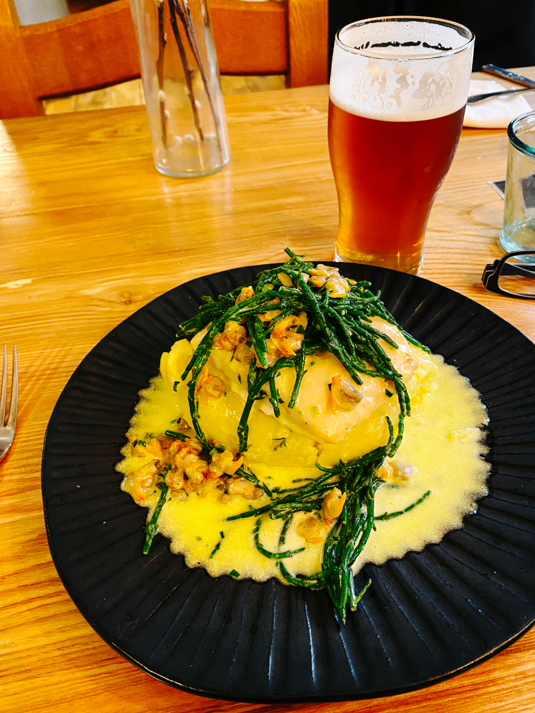
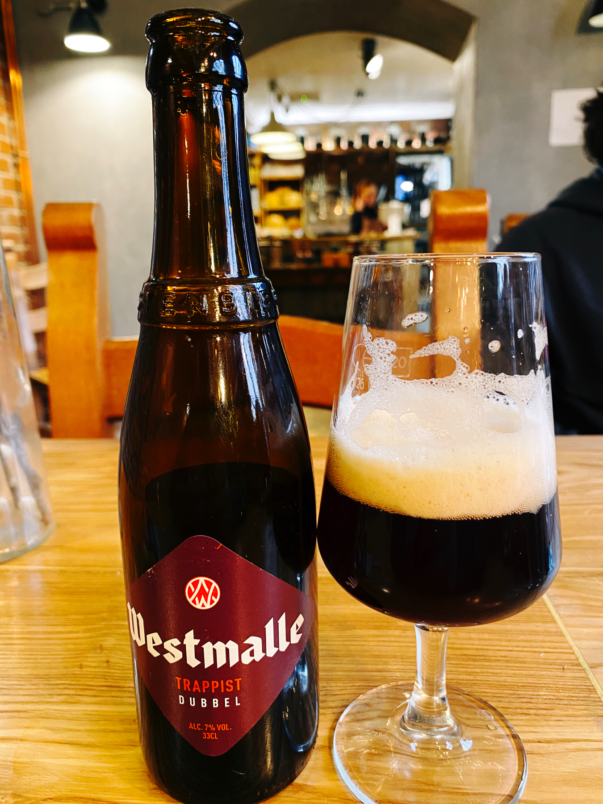
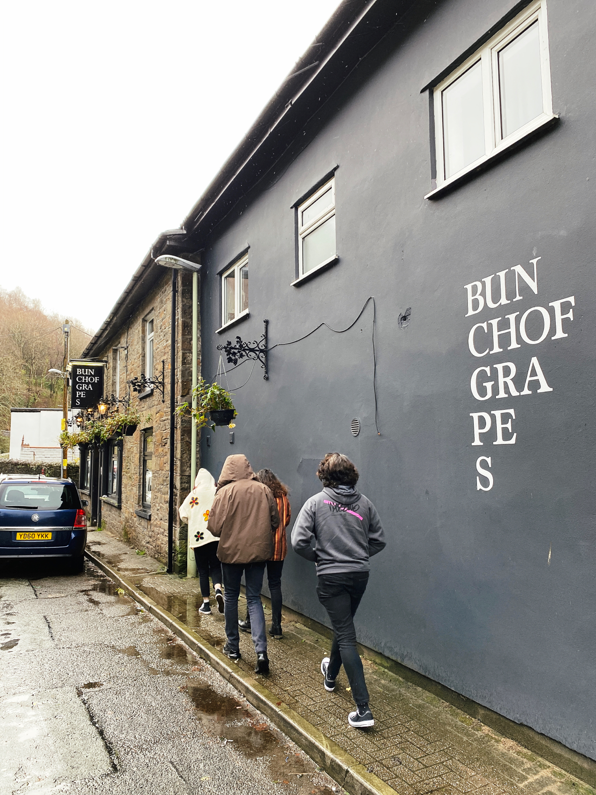
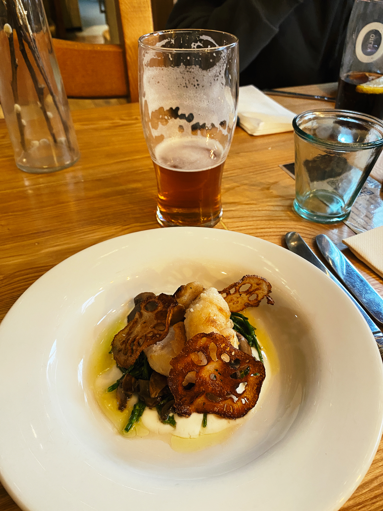

Just watched the New Year’s Day Doctor Who. That was a good episode, I always like a time loop and Aisling Bea and Adjani Salmon were superb.
Exit the ascension device!
📺
Main course and dessert.


First visit of the year to my favourite pub. Bunch of Grapes, Pontypridd🍺



Beer check in via Untappd 🗺🍺 — Drinking a Kashmir by Salopian Brewery
🔎 Zoom in
🎵 My Top weekly artists: Sigmatropic (25), Lana Del Rey (14), Gomez (11), The Police (11) & Andy Summers & Robert Fripp (10) via tweekly.fm
Film log - watched: Don’t Look Up, 2021 - ★★★½ 🎥
🎵 My Top weekly artists: La Serenissima, Chandler, Bircher, Whelan (27), Nubya Garcia (18), Andy Summers (12), The Police (11) & Kynsy (5) via tweekly.fm
Finishing off Xmas evening

Quiet family Xmas dinner of
Spanakopita
Gigantes plaki
Harissa roasted sprouts, broccoli, halloumi and spinach
Gingery beetroot with peanut dressing and black sesame
Flatbreads
Hummus
Tzatziki


Boxing Day will be busier…
Will be feeling really strong today - cooking nearly a kilogram of spinach for Xmas dinner 🎅💪

Finished reading: Pandemonium by Armando Iannucci 📚
Film log - watched: Army of Thieves, 2021 - ★★½ 🎥
Film log - watched: Coma, 2019 - ★★½ 🎥
Film log - watched: Wild at Heart, 1990 - ★★★½ 🎥
Finished reading: Bitter Lemons of Cyprus by Lawrence Durrell 📚
Short Sunday afternoon walk🚶♂️


🎵 My Top weekly artists: The Police (40), Alessandrini, Concerto Italiano (17), Andy Summers (13), The Diasonics (13) & Neil Young & Crazy Horse (3) via tweekly.fm
First Xmas fire 🔥

The crowds are in for the early morning cricket 🏏 🐈

The Ashes 2nd Test in Adelaide is a day-night match, so starts at 4am in the UK. At least I can get up at around 6:30am and follow two full sessions - much better than staying up late into the night/early morning for the standard match timings in Australia 😊🏏
Senedd Cymru

🎵 My Top weekly artists: L’Orfeo Barockorchester & Michi Gaigg (24), Elbow (12) & Mary Ann Tedstone Glover (9) via tweekly.fm
Beer check in via Untappd 🗺🍺 — Drinking a Paper Planes by Salopian Brewery
🔎 Zoom in